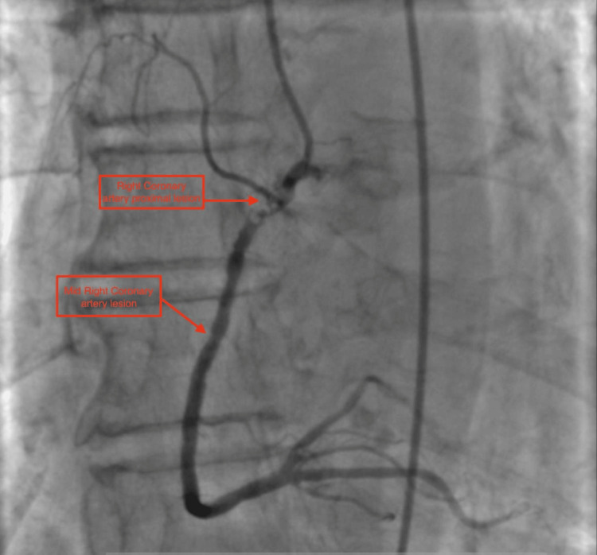
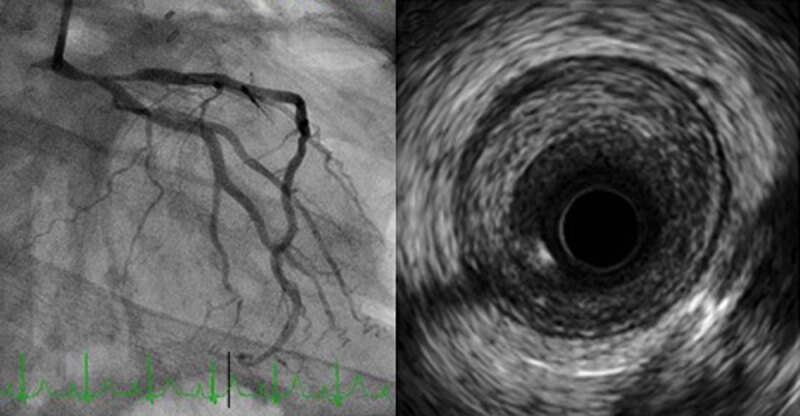
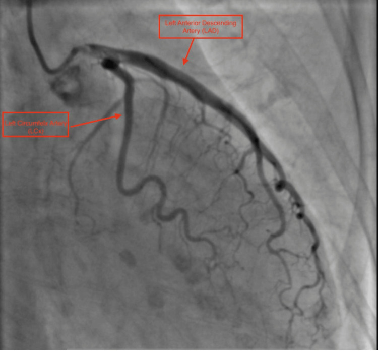

6706 — Bệnh động mạch vành do xạ: vì sao hẹp ở LỖ và ĐOẠN GẦN, tầm soát bằng CTA khi nào, và PCI hay CABG
Tags: pattern:hep-mach-vanh pattern:voi-hoa-mach-vanh pattern:hep-lo-dong-mach vung:vanh vung:tim vung:trung-that anatomy:dong-mach-vanh protocol:CTA-vanh protocol:MRI-tim score:CAC score:CAD-RADS
Mức chắc chắn (certainty): tổng hợp y văn (literature synthesis) — ghép tổng quan bệnh mạch vành do xạ (Methodist DeBakey Cardiovasc J 2025, PMCID PMC12352380, CC BY-NC), tổng quan bệnh tim do xạ ngực 2026 (Curr Cardiol Rep 2026, PMCID PMC13714108, CC BY), ca nguyên văn STEMI do hẹp lỗ động mạch vành phải sau xạ 30 năm (Cureus 2026, PMCID PMC13281784, CC BY) và dữ liệu liều–đáp ứng của y văn (NEJM 2013; Childhood Cancer Survivor Study). Không có ca do nhóm tự chụp.
Kịch bản thực hành (ghép từ hai ca dưới đây, không phải ca nguyên văn): nữ 36 tuổi, tiền sử Hodgkin, xạ trung thất 41 Gy cách đây 10 năm, không yếu tố nguy cơ tim mạch cổ điển, vào vì đau ngực khi gắng sức; ECG có ST chênh lên ở aVR. Câu hỏi: hẹp ở đâu, vì sao không vôi hóa, và nếu là hẹp thân chung trái thì nong hay mổ? Bài chốt ba quyết định: (1) RICAD là bệnh của "bản đồ liều" — hẹp LỖ và ĐOẠN GẦN, mảng xơ dài, nhẵn, ít lipid, có thể KHÔNG vôi hóa; (2) CAC = 0 KHÔNG loại trừ RICAD, nên tầm soát bằng CTA/imaging chức năng bắt đầu 5–10 năm sau xạ và lặp mỗi 5 năm; (3) PCI với stent phủ thuốc là lựa chọn hợp lý cho hẹp lỗ/thân chung ở người đã xạ, nhưng CABG không bị "cấm" — quyết định theo heart team và giải phẫu mạch ghép. Nối 6705 – Bệnh van tim do xạ, 6704 – Bệnh cơ tim do xạ, 6703 – Bệnh cơ tim do anthracycline, 810 – Vành & CAD-RADS 2.0.
1. Tổng quan bệnh học – cơ chế hình ảnh: vì sao tia xạ làm hẹp đúng "cửa vào" của động mạch vành
- Dịch tễ (epidemiology): bệnh mạch vành là nguyên nhân bệnh tật – tử vong đứng thứ hai ở người sống sót ung thư ngực – trung thất, sau bệnh van tim; thời gian tiềm tàng (latency) điển hình khoảng 15 năm (PMC12352380, PMC13714108). Ở người sống sót Hodgkin, nguy cơ tăng tới 250%; ở ung thư vú, tăng 25% so với dân số không xạ (PMC12352380).
- Thời gian tiềm tàng khác nhau theo bệnh nền: ung thư vú ~10 năm, Hodgkin 2–3 thập kỷ (PMC12352380). Vì vậy một phụ nữ 45 tuổi đau ngực 10 năm sau xạ vú trái vẫn nằm trong cửa sổ bệnh, không được gọi là "đau ngực cơ năng vì còn trẻ".
- Ngưỡng liều – đáp ứng (dose–response), không có ngưỡng an toàn: mỗi 1 Gy liều tim trung bình (mean heart dose — MHD) làm tăng 7,4% nguy cơ biến cố vành chính (nhồi máu, tái thông, tử vong do thiếu máu cơ tim) — kết quả của nghiên cứu landmark trên bệnh nhân ung thư vú (NEJM 2013) và được lặp lại ở người sống sót Hodgkin (PMC13714108). Nghĩa là MHD 20 Gy ≈ +150% tương đối, không phải "liều thấp thì an toàn".
- Ở trẻ sống sót ung thư: xạ tim 15–35 Gy làm tăng 2,4 lần nguy cơ nhồi máu; > 35 Gy tăng 3,6 lần; mỗi 10 Gy thêm vào làm gấp đôi nguy cơ bệnh vành ở mốc 30 năm (Childhood Cancer Survivor Study, dẫn trong PMC13714108). Đây là lý do dải bài 67xx đặt RICAD cạnh bệnh cơ tim và bệnh van do xạ.
- Hình ảnh học ở người không triệu chứng: chụp CTA cho 78 người sống sót lymphoma (xạ trung thất trung bình ~36 Gy, trung vị 16 năm sau xạ, tuổi trung bình 45 ± 11) so với 78 người ghép cặp không xạ: hẹp ≥ 50% gặp ở 59% so với 36%; bệnh nhiều thân gấp ~2,7 lần (PMC13714108). Ở bệnh nhân ung thư phổi xạ ngực, canxi mạch vành (CAC) xuất hiện 48,6% so với 24,6% ở nhóm chứng, OR hiệu chỉnh 3,1 (KTC 95% 1,09–9,2) (PMC13714108).
- TẠI SAO mảng xơ do xạ "nghèo lipid": tia xạ gây đứt gãy DNA, stress oxy hóa (ROS), mất tế bào nội mô, viêm mạn và tăng TGF-β → tăng sinh xơ nội mạc (fibrointimal proliferation) và tái cấu trúc âm (negative remodeling). Mô học: mảng giàu collagen và fibrin, rất ít lipid, không có lõi hoại tử lớn — khác hẳn mảng xơ vữa cổ điển (PMC12352380). Vì vậy trên siêu âm trong lòng mạch (IVUS) mảng đồng tâm/lệch tâm, xơ, không vôi, và trên CTA có thể chỉ thấy hẹp lòng mạch nhẵn, dài mà không có vôi hóa.
- TẠI SAO đúng LỖ và ĐOẠN GẦN: các đoạn này nằm sát gốc động mạch chủ và dải van–ĐMC, nơi liều xạ cao nhất trong trường trung thất và nơi ứng suất cơ học lớn nhất; tổn thương xạ cộng xơ vữa → hẹp lỗ (ostial) và đoạn gần, dài, nhẵn, đồng tâm, dạng ống (long, smooth, concentric, tubular) (PMC12352380). Động mạch LAD và RCA hay bị nhất khi xạ trung thất; LAD hay bị nhất khi xạ vú trái (PMC13714108).
- TẠI SAO có ca vôi hóa nặng: xạ làm tăng tốc xơ vữa và vôi hóa sớm; ở người có sẵn xơ vữa, xạ "đẩy nhanh" quá trình này. Ca 74 tuổi xạ vú 30 năm trước có hẹp 99% lỗ RCA kèm vôi hóa lan và thêm hẹp 80% đoạn giữa RCA (PMC13281784) — vôi hóa không loại trừ RICAD, và không phải mọi mảng do xạ đều không vôi.
- TẠI SAO thiếu máu im lặng: xạ làm tổn thương sợi thần kinh tự chủ và mạng vi mạch, nên thiếu máu cơ tim im lặng và nhồi máu không đau gặp nhiều hơn dân số chung (PMC13714108). Triệu chứng lại dễ bị quy cho viêm phổi do xạ, xơ phổi, viêm màng tim — cùng nằm trong trường chiếu.
2. Mẫu hình + chẩn đoán phân biệt theo vị trí và theo "dấu vân tay trường chiếu"
- Mẫu hình (pattern) chính: hẹp lỗ hoặc đoạn gần một hoặc nhiều thân, không vôi hoặc vôi ít, bờ nhẵn, đoạn hẹp dài, không có mảng "lồi" phức tạp; thường bệnh nhiều thân ở người trẻ hơn tuổi mạch vành và ít yếu tố nguy cơ (PMC12352380).
- Gamut theo vị trí:
- Lỗ RCA / lỗ thân chung trái (LM): điển hình nhất sau xạ trung thất; hẹp lỗ + đoạn gần, có thể lan vào chỗ phân nhánh (bifurcation) — ca 36 tuổi hẹp 90% thân chung trái xa lan vào LAD gần (PMC12352380); ca 74 tuổi hẹp 99% lỗ RCA (PMC13281784).
- LAD đoạn gần: hay gặp sau xạ vú trái (trường chiếu tiếp tuyến đi qua tim trái); thường hẹp dài, nhẵn.
- Đoạn giữa – xa: ít điển hình hơn, nhưng ca 74 tuổi có thêm hẹp 80% đoạn giữa RCA — tức không được chỉ nhìn lỗ.
- Nhiều thân (multivessel): gấp ~2,7 lần so với người không xạ (PMC13714108) → khi thấy một tổn thương lỗ, phải đọc toàn bộ cây vành.
- Gamut chẩn đoán phân biệt của "hẹp vành ở người trẻ không yếu tố nguy cơ":
- RICAD — tiền sử xạ ngực/trung thất, hẹp lỗ–gần, mảng xơ không vôi.
- Xơ vữa cổ điển sớm — vôi hóa, tổn thương chỗ phân nhánh, có rối loạn lipid/ĐTĐ/hút thuốc.
- Bóc tách động mạch vành tự phát (SCAD) — nữ trẻ, sau sinh, không có mảng xơ, hình ảnh vạt nội mạc (intimal flap) hoặc hẹp dài hình ống trên CTA.
- Co thắt mạch vành / bệnh vi mạch do xạ — động mạch không hẹp có ý nghĩa trên CTA nhưng đau ngực, ST thay đổi, cần thử nghiệm co thắt hoặc PET tưới máu.
- Thuyên tắc / mảng nứt vỡ — hẹp đột ngột, huyết khối, bờ không đều; khác mảng xơ nhẵn do xạ.
- Dấu hiệu định vị trên CTA (rất hữu ích): vôi hóa động mạch chủ/vanh "dừng" đúng biên trường xạ và mảng xơ tập trung ở lỗ — cùng logic với canxi vành van trước/AMC của bài 6705.
3. Bảng so sánh phân biệt (ma trận đối chiếu)
| Thực thể (entity) | Hình ảnh điển hình (CTA/IVUS) | Chốt vào (rule-in) | Chốt loại (rule-out) | Gợi ý xác nhận |
|---|---|---|---|---|
| RICAD (bệnh vành do xạ) | Hẹp lỗ/đoạn gần, dài, nhẵn, không vôi; IVUS: mảng xơ đồng tâm, không lõi lipid | Tiền sử xạ ngực/trung thất + hẹp lỗ–gần + mảng xơ không vôi ở người trẻ | Không loại trừ được bằng CAC = 0 hay không đau ngực | CTA + IVUS/FFR khi can thiệp; đối chiếu bản đồ liều xạ |
| Xơ vữa cổ điển | Vôi hóa, tổn thương chỗ phân nhánh, mảng hỗn hợp | Yếu tố nguy cơ (LDL, ĐTĐ, thuốc lá) + vôi hóa + vị trí phân nhánh | Không loại trừ RICAD khi có xơ vữa — hai bệnh cộng gộp | CAC, lipid, CTA; vôi hóa "dừng" ở biên xạ gợi ý xạ |
| SCAD | Vạt nội mạc, hẹp dài lan từ đoạn giữa, không mảng xơ | Nữ trẻ, sau sinh, đau ngực cấp, troponin tăng | Không có tiền sử xạ; không có mảng xơ lỗ | CTA/IVUS; tránh PCI nếu không có thiếu máu tiến triển |
| Co thắt / bệnh vi mạch do xạ | Động mạch không hẹp ≥ 50%, nhưng thiếu máu khi gắng sức | Đau ngực + ST thay đổi + CTA bình thường/thu hẹp nhẹ | Hẹp ≥ 70% hoặc FFR dương tính thì không gọi là vi mạch đơn thuần | PET tưới máu, MRI tưới máu, thử nghiệm acetylcholine |
| Huyết khối / mảng nứt vỡ | Hẹp đột ngột, bờ không đều, huyết khối trong lòng | Hội chứng vành cấp + hình ảnh huyết khối | Mảng nhẵn, dài, không vôi không phải mảng nứt vỡ điển hình | Chụp mạch xâm lấn + OCT/IVUS |
- Ảnh minh họa cơ chế:
images/6706_mach-vanh-xa_CoChe_PMC13714108-F1.jpg— sơ đồ chuỗi DNA → ROS → viêm → xơ hóa của tổn thương do tia xạ, dùng cho mục (1).
4. Protocol chụp + hệ phân độ/điểm chuẩn hóa
- Ai cần tầm soát (screening): người sống sót ung thư có xạ ngực/trung thất, đặc biệt Hodgkin, ung thư vú trái, ung thư phổi, u trung thất; nguy cơ cao nhất khi tuổi lúc xạ < 25** và **MHD > 25 Gy (PMC12352380).
- Mốc bắt đầu: tổng quan 2026 khuyến nghị bắt đầu 10 năm sau xạ và lặp mỗi 5 năm (PMC13714108); tổng quan 2025 dùng mốc 5 năm sau xạ cho nhóm nguy cơ cao (PMC12352380). Cả hai đều thống nhất: không chờ triệu chứng, và lặp lại định kỳ vì bệnh tiến triển chậm.
- Chọn phương thức: CTA vành khi cần giải phẫu (hẹp lỗ, thân chung, nhiều thân, trước can thiệp); imaging chức năng (siêu âm tim gắng sức, SPECT/PET tưới máu, MRI tưới máu) khi cần bằng chứng thiếu máu hoặc khi CTA không kết luận; CAC hữu ích để xếp nguy cơ nhưng CAC = 0 không loại trừ RICAD.
- Protocol CTA vành (giống 810, thêm lưu ý): máy ≥ 64 dãy, lát 0,5–0,625 mm, tiền cứu (prospective) ECG-gating để giảm liều; kiểm soát nhịp < 65 lần/phút (chẹn beta ngắn), nitrate dưới lưỡi; tính CAC trước; với vôi hóa lỗ nhiều phải đọc cả MPR mỏng và so với chụp mạch xâm lấn vì blooming làm hẹp giả.
- Phân độ CAD-RADS 2.0 (2022): 0 = 0%; 1 = 1–24%; 2 = 25–49%; 3 = 50–69%; 4 = 70–99% (4A một thân, 4B ba thân/thân chung); 5 = tắc hoàn toàn. Bổ sung modifier HRP (mảng nguy cơ cao: thể tích mảng lớn, tái cấu trúc dương, điểm vôi thấp, "napkin-ring") — đúng với mảng xơ do xạ không vôi nhưng hẹp nặng. Với stent dùng S, cầu nối dùng G, không đọc được dùng N.
- Quyết định tái thông (heart team):
- PCI + stent phủ thuốc (DES) là lựa chọn hợp lý và được ưu tiên khi khả thi, kể cả thân chung trái hoặc ba thân, vì mổ bị hạn chế bởi mô xơ, mạch ghép bị xạ, "ĐMC sứ" (porcelain aorta) (PMC12352380); DES tốt hơn stent kim loại trần ở nhóm này (PMC13714108).
- CABG không bị cấm: dữ liệu National Readmission Database cho thấy tử vong trong viện và tái nhập viện 90 ngày tương đương giữa người có và không có xạ ngực (PMC13714108) — bằng chứng này phản biện quan niệm "đã xạ thì không mổ được". Vấn đề thật là chọn mạch ghép: động mạch ngực trong (IMA) nằm trong trường xạ có thể xơ, hẹp, nên phải chụp/đánh giá trước mổ.
- Yếu tố quyết định: tuổi, chức năng thất trái, bệnh van/màng tim đồng thời (bài 6705), xơ phổi và nguy cơ gây mê, khả năng tuân thủ kháng kết tập tiểu cầu kép.
- Sơ đồ tầm soát – xử trí:
flowchart TD
A[Người sống sót ung thư có xạ ngực/trung thất] --> B{MHD và tuổi lúc xạ?}
B -->|MHD trên 25 Gy hoặc tuổi dưới 25| C[Nguy cơ cao: CTA hoặc imaging chức năng từ 5-10 năm sau xạ]
B -->|MHD thấp, nguy cơ thấp| D[Đánh giá nguy cơ lâm sàng + CAC, lặp mỗi 5 năm]
C --> E{Hẹp lỗ/đoạn gần hoặc thiếu máu?}
D --> E
E -->|Không| F[Kiểm soát yếu tố nguy cơ, lặp 5 năm]
E -->|Có hẹp 50-69%| G[Imaging chức năng hoặc FFR-CT]
E -->|Hẹp từ 70% hoặc thân chung| H[Heart team]
G -->|Thiếu máu| H
G -->|Không thiếu máu| F
H --> I{Giải phẫu và mạch ghép thuận lợi?}
I -->|Có, bệnh nhiều thân| J[CABG với mạch ghép đã đánh giá]
I -->|Không hoặc hẹp lỗ đơn thuần| K[PCI + DES]
5. Biến thể bình thường và cạm bẫy
- Cạm bẫy 1 — "CAC = 0 nên không có bệnh vành": mảng xơ do xạ nghèo canxi, nên điểm canxi 0 vẫn có thể kèm hẹp 90% thân chung (đúng ca PMC12352380). Ở người có tiền sử xạ, CAC chỉ dùng để xếp nguy cơ, không dùng để loại trừ.
- Cạm bẫy 2 — blooming ở lỗ mạch: vôi hóa lỗ RCA/thân chung làm CTA hẹp giả; phải đọc lát mỏng, MPR vuông góc, và so với chụp mạch trước khi can thiệp.
- Cạm bẫy 3 — quy triệu chứng cho phổi/màng tim: khó thở và đau ngực ở người đã xạ thường bị gán cho xơ phổi, viêm màng tim, bệnh van — trong khi thiếu máu im lặng là bệnh song hành. Ở người sống sót ung thư, đau ngực không điển hình vẫn phải loại trừ hội chứng vành cấp.
- Cạm bẫy 4 — chỉ nhìn một tổn thương: vì bệnh nhiều thân gấp 2,7 lần, thấy hẹp lỗ RCA không được bỏ qua hẹp 80% đoạn giữa RCA hay tổn thương LAD (ca PMC13281784).
- Cạm bẫy 5 — gọi co thắt/vi mạch là "bình thường": CTA không hẹp không đồng nghĩa không thiếu máu; bệnh vi mạch do xạ cần PET/MRI tưới máu và điều trị yếu tố nguy cơ + chống co thắt.
- Cạm bẫy 6 — bỏ sót bệnh đồng thời: trước can thiệp vành phải đánh giá van, cơ tim, màng tim, hệ dẫn truyền (bài 6704, 6705); hẹp van ĐMC nặng có thể là lý do chính gây đau ngực.
- Biến thể bình thường dễ nhầm: vôi hóa vành van hai lá (MAC) và dày dải van–ĐMC ở người đã xạ là dấu hiệu định vị trường chiếu, không phải "bệnh van" đơn thuần — đọc cùng bài 6705.
6. Tự lượng giá — Blind Quiz ngay trên trang tĩnh (không cần app)
Ca 1 — nữ 74 tuổi, STEMI, tiền sử ung thư vú xạ 30 năm trước

- Gợi ý lâm sàng (clinical context): nữ 74 tuổi, ung thư vú đã xạ 30 năm trước, vào vì đau ngực kiểu nhồi máu, ECG ST chênh lên ở II, III, aVF.
- Câu hỏi: Tổn thương ở đâu và mức độ? Vì sao vị trí này gợi ý bệnh do xạ chứ không chỉ xơ vữa? Có bỏ sót tổn thương thứ hai không?
Bấm để hiện đáp án (findings + chẩn đoán)
- Dấu hiệu (findings): hẹp 99% ở LỖ và đoạn gần động mạch vành phải (RCA), thêm hẹp 80% ở đoạn giữa RCA; có vôi hóa lan theo thành mạch.
- Chẩn đoán (diagnosis): hội chứng vành cấp trên nền bệnh vành do xạ — hẹp lỗ đúng "dấu vân tay" trường chiếu, nhưng vôi hóa vẫn có vì xạ đẩy nhanh xơ vữa sẵn có.
- Nguồn ảnh: Cureus 2026, PMCID PMC13281784, Figure 3 — CC BY 4.0.
Ca 2 — nữ 36 tuổi, Hodgkin xạ 41 Gy cách 10 năm, đau ngực khi gắng sức

- Gợi ý lâm sàng: 36 tuổi, Hodgkin, xạ trung thất 41 Gy cách 10 năm, không yếu tố nguy cơ tim mạch; ECG ST chênh lên aVR, ST chênh xuống V1–V6.
- Câu hỏi: Vì sao tổn thương lại ở thân chung trái xa? Siêu âm trong lòng mạch cho thấy gì, và nó loại giả thuyết nào?
Bấm để hiện đáp án (findings + chẩn đoán)
- Dấu hiệu (findings): hẹp 90% thân chung trái xa lan vào LAD gần; IVUS: mảng xơ lệch tâm, dày, KHÔNG có lõi lipid và KHÔNG vôi hóa.
- Chẩn đoán (diagnosis): RICAD — mảng xơ do xạ, không phải mảng xơ vữa điển hình; đã đặt stent phủ thuốc và lui bệnh.
- Phản biện (critique): đây là ca đơn lẻ, không đại diện mọi RICAD; một số ca vẫn vôi hóa (ca 1).
- Nguồn ảnh: Methodist DeBakey Cardiovasc J 2025, PMCID PMC12352380, Figure 1 — CC BY-NC 4.0.
Ca 3 — vì sao "canxi nhiều" không đồng nghĩa "hẹp nặng nhất ở đó"

- Gợi ý lâm sàng: cùng bệnh nhân ca 1; chụp tuần hoàn trái để tìm tổn thương đồng thời.
- Câu hỏi: Hình này chứng minh điều gì về mối liên hệ giữa canxi và hẹp? Nếu CTA báo "vôi hóa nặng LAD" thì bước tiếp theo là gì?
Bấm để hiện đáp án (findings + chẩn đoán)
- Dấu hiệu (findings): LAD và LCx thông, có lắng đọng canxi dọc thành nhưng không hẹp tương ứng; tổn thương gây triệu chứng nằm ở RCA.
- Chẩn đoán (diagnosis): canxi là dấu hiệu của quá trình xơ vữa/xạ, không phải thước đo độ hẹp — phải đọc lòng mạch, không đọc "điểm canxi".
- Nguồn ảnh: Cureus 2026, PMCID PMC13281784, Figure 2 — CC BY 4.0.
Bài liên quan chéo
- 6705 – Bệnh van tim do xạ
- 6704 – Bệnh cơ tim do xạ ở người sống sót ung thư nhi
- 6703 – Bệnh cơ tim do anthracycline
- 810 – CTA vành & CAD-RADS 2.0
- 820 – MRI tim: LGE & mapping
Ảnh
6706_mach-vanh-xa_CoChe_PMC13714108-F1.jpg— sơ đồ cơ chế tổn thương do tia xạ (Curr Cardiol Rep 2026, PMC13714108, CC BY 4.0).6706_mach-vanh-xa_AngioRCA_PMC13281784-F3.jpg— hẹp 99% lỗ RCA + 80% đoạn giữa (Cureus 2026, PMC13281784, CC BY 4.0).6706_mach-vanh-xa_AngioTrai_PMC13281784-F2.jpg— tuần hoàn trái, canxi không tương ứng hẹp (Cureus 2026, PMC13281784, CC BY 4.0).6706_mach-vanh-xa_AngioIVUS_PMC12352380-F1.jpg— thân chung trái 90% + IVUS mảng xơ không vôi (Methodist DeBakey Cardiovasc J 2025, PMC12352380, CC BY-NC 4.0).- Nguồn + giấy phép từng ảnh:
images/CREDITS.md; link gốc:sources.md.
Không dùng để chẩn đoán độc lập khi chưa có người hướng dẫn.